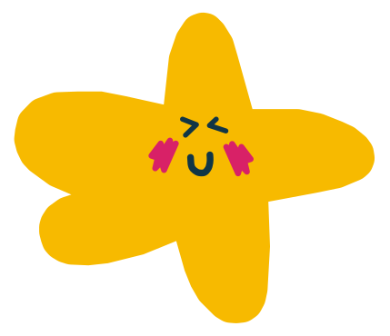

StarT
Tareitas pendientes
Instalar App
¿Qué tenemos ahora?
Write like you are running out of time.
Nueva Tarea
Filtrar por Materia
Gestionar Materias
Tareas
💡 Selecciona una tarea y usa
Ctrl + ↑/↓
para ordenar
💡 Toca una tarea para enfocarla y navega con tus atajos favoritos.
Nueva Tarea
Título de la tarea
Descripción (Opcional)
Materia
Prioridad
Cancelar
Guardar Tarea
Gestionar Materias
Nueva Materia / Categoría
Rosa Pastel
Azul Pastel
Lavanda
Menta
Durazno
Agregar Materia
Materias Existentes
Cerrar